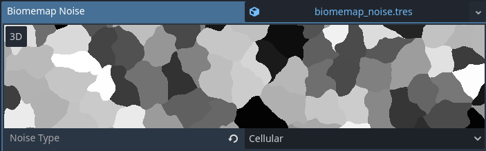
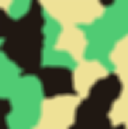
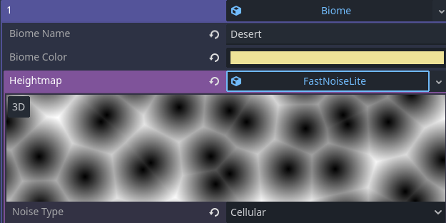
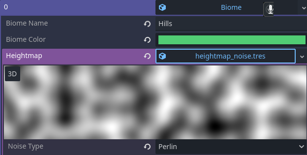
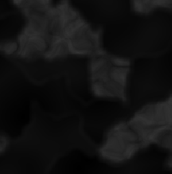

honestly, world generation ain't all that. but it is REALLY neat!
let me break it down! first, i start by generating a cellular noise map, similarly to a voronoi diagram
then, depending on the number of biomes that are available, i split it (you can add weights here so certain biomes show more or less) additionally, you can add a moisture map or a heap map, to generate certain biomes in certain places. but it wasnt necessary for my game.
the issue is that hard edges between biomes looks like shit, so i apply a gaussian blur to it, so now the biome transition is smooth(er). then, i go through the image and check each pixel's value, so i can tell which biomes it should belong to (30% plains, 70% mountains, perhaps?)
each biome i have has its own custom noise map. a desert has a cellular noise map with a euclidian distance function. this gives the appearance of dunes. something like the plains biome might just have a basic perlin noise function with two octaves.
 based on the weight of the pixel, i weight each noise map differently. the benefit of doing this, is that each noise map blends peoperly, so there aren't any terrible jumps in biomes/terrain.
we now have a heightmap, which we can just apply to a mesh and a collision shape.
obviously there is so much more i can do with this, such as hydraulic erosion, which i intend to implement soon.